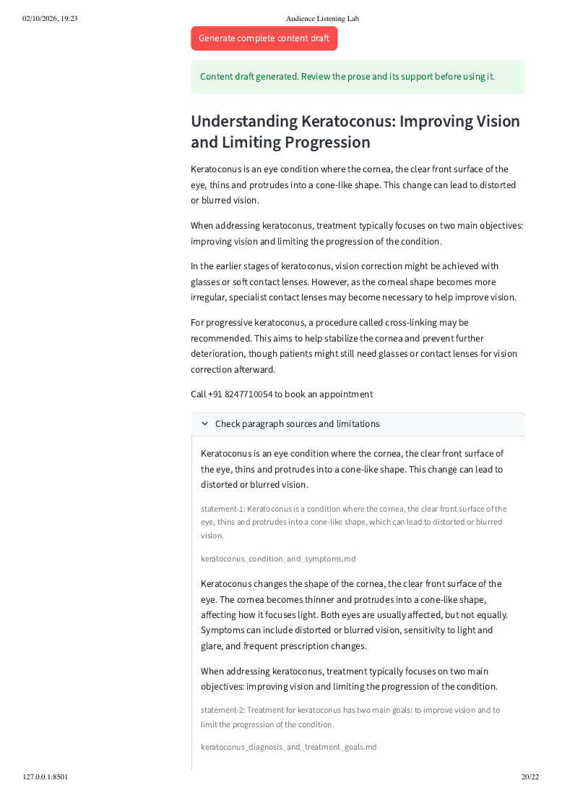

From audience research to a draft with source references
Today’s local Streamlit prototype connects audience themes, video research, uploaded reference documents, a reviewed topic and a complete content draft.
What was tested today
Gemini analyzed an existing 35-comment collection, and video research returned findings for five videos and three proposed topics. Free caption retrieval worked in the test. Uploaded documents supplied the explanatory material, while audience comments supplied research context.
The proposed comparison topic exceeded the available evidence. During review, its title was narrowed to improving vision and limiting progression. Missing price, insurance, wear-time and comparison evidence remains unresolved.
Three formats tested: LinkedIn, a short blog and Google Business Profile were generated separately from the same four selected statements. No batch generation, scheduling or publishing was tested. The original PDF captures the earlier LinkedIn run; the blog and Google Business Profile exports and screenshots were added afterward.
The Streamlit result

Generated LinkedIn test draft
Understanding Keratoconus: Improving Vision and Limiting Progression
Keratoconus is an eye condition where the cornea, the clear front surface of the eye, thins and protrudes into a cone-like shape. This change can lead to distorted or blurred vision.
When addressing keratoconus, treatment typically focuses on two main objectives: improving vision and limiting the progression of the condition.
In the earlier stages of keratoconus, vision correction might be achieved with glasses or soft contact lenses. However, as the corneal shape becomes more irregular, specialist contact lenses may become necessary to help improve vision.
For progressive keratoconus, a procedure called cross-linking may be recommended. This aims to help stabilize the cornea and prevent further deterioration, though patients might still need glasses or contact lenses for vision correction afterward.
Call +91 8247710054 to book an appointment
Draft material; clinical review pending. Not approved for publication.
Inspect each paragraph’s support
Citation checks verify that the excerpt exists in the uploaded document. They do not establish clinical correctness or prove that the excerpt supports every implication of the generated prose.
Keratoconus is an eye condition where the cornea, the clear front surface of the eye, thins and protrudes into a cone-like shape. This change can lead to distorted or blurred vision.
keratoconus_condition_and_symptoms.md · statement-1
Keratoconus changes the shape of the cornea, the clear front surface of the eye. The cornea becomes thinner and protrudes into a cone-like shape, affecting how it focuses light. Both eyes are usually affected, but not equally. Symptoms can include distorted or blurred vision, sensitivity to light and glare, and frequent prescription changes.View reference document
When addressing keratoconus, treatment typically focuses on two main objectives: improving vision and limiting the progression of the condition.
keratoconus_diagnosis_and_treatment_goals.md · statement-2
Treatment has two distinct goals: improve vision and limit progression.View reference document
In the earlier stages of keratoconus, vision correction might be achieved with glasses or soft contact lenses. However, as the corneal shape becomes more irregular, specialist contact lenses may become necessary to help improve vision.
keratoconus_vision_correction_and_monitoring.md · statement-3
Glasses or soft contact lenses may help in earlier keratoconus. Specialist contact lenses may be needed as corneal shape becomes more irregular.View reference document
For progressive keratoconus, a procedure called cross-linking may be recommended. This aims to help stabilize the cornea and prevent further deterioration, though patients might still need glasses or contact lenses for vision correction afterward.
keratoconus_diagnosis_and_treatment_goals.md · statement-5
Cross-linking may be recommended for progressive disease to help stabilize the cornea.View reference document
keratoconus_cross_linking_expectations.md · statement-5
Cross-linking for keratoconus aims to prevent further deterioration. Patients may still need glasses or contact lenses afterward.View reference document
Generated Blog test draft

Understanding Keratoconus: Improving Vision and Limiting Progression
Keratoconus is an eye condition where the cornea, the clear front surface of the eye, thins and begins to protrude into a cone-like shape. This change in shape can lead to distorted or blurred vision. Understanding this condition is the first step towards managing it effectively.
Improving Vision with Keratoconus
For those with keratoconus, treatment typically focuses on two main goals: improving vision and limiting the progression of the condition. In the earlier stages, vision correction may be achieved with glasses or soft contact lenses. However, as the cornea's shape becomes more irregular, specialist contact lenses may become necessary to achieve clearer vision.
Limiting Progression of Keratoconus
To help stabilize the cornea and prevent further deterioration, a procedure called cross-linking may be recommended for progressive keratoconus. While cross-linking aims to limit the condition's progression, patients may still need glasses or contact lenses afterward to correct their vision.
Call +91 8247710054 to book an appointment
Review finding: The sentence “Understanding this condition is the first step towards managing it effectively” is not established by the cited statement. Remove or revise it before publication. The raw generated export is retained here to make this limitation visible. This is a short article because source coverage is limited.
Draft material; clinical review pending. Not approved for publication.
Inspect paragraph source references
Keratoconus is an eye condition where the cornea, the clear front surface of the eye, thins and begins to protrude into a cone-like shape. This change in shape can lead to distorted or blurred vision. Understanding this condition is the first step towards managing it effectively.
keratoconus_condition_and_symptoms.md · statement-1
Keratoconus changes the shape of the cornea, the clear front surface of the eye. The cornea becomes thinner and protrudes into a cone-like shape, affecting how it focuses light. Both eyes are usually affected, but not equally. Symptoms can include distorted or blurred vision, sensitivity to light and glare, and frequent prescription changes.
Improving Vision with Keratoconus For those with keratoconus, treatment typically focuses on two main goals: improving vision and limiting the progression of the condition. In the earlier stages, vision correction may be achieved with glasses or soft contact lenses. However, as the cornea's shape becomes more irregular, specialist contact lenses may become necessary to achieve clearer vision.
keratoconus_diagnosis_and_treatment_goals.md · statement-2
Treatment has two distinct goals: improve vision and limit progression.
keratoconus_vision_correction_and_monitoring.md · statement-3
Glasses or soft contact lenses may help in earlier keratoconus. Specialist contact lenses may be needed as corneal shape becomes more irregular.
Limiting Progression of Keratoconus To help stabilize the cornea and prevent further deterioration, a procedure called cross-linking may be recommended for progressive keratoconus. While cross-linking aims to limit the condition's progression, patients may still need glasses or contact lenses afterward to correct their vision.
keratoconus_diagnosis_and_treatment_goals.md · statement-5
Cross-linking may be recommended for progressive disease to help stabilize the cornea.
keratoconus_cross_linking_expectations.md · statement-5
Cross-linking for keratoconus aims to prevent further deterioration. Patients may still need glasses or contact lenses afterward.
Generated Google Business Profile post test draft

Understanding Keratoconus and Vision Care
Keratoconus is a condition where the cornea, the clear front surface of the eye, thins and protrudes into a cone-like shape. This can lead to distorted or blurred vision. The main goals of treatment are to improve vision and to limit the progression of the condition.
In earlier stages, glasses or soft contact lenses might correct vision. However, as the corneal shape becomes more irregular, specialist contact lenses may be needed. For progressive keratoconus, cross-linking may be recommended to help stabilize the cornea and prevent further deterioration, though glasses or contact lenses may still be required afterward.
Call +91 8247710054 to book an appointment
Draft material; clinical review pending. Not approved for publication.
Inspect paragraph source references
Keratoconus is a condition where the cornea, the clear front surface of the eye, thins and protrudes into a cone-like shape. This can lead to distorted or blurred vision. The main goals of treatment are to improve vision and to limit the progression of the condition.
keratoconus_condition_and_symptoms.md · statement-1
Keratoconus changes the shape of the cornea, the clear front surface of the eye. The cornea becomes thinner and protrudes into a cone-like shape, affecting how it focuses light. Both eyes are usually affected, but not equally. Symptoms can include distorted or blurred vision, sensitivity to light and glare, and frequent prescription changes.
keratoconus_diagnosis_and_treatment_goals.md · statement-2
Treatment has two distinct goals: improve vision and limit progression.
In earlier stages, glasses or soft contact lenses might correct vision. However, as the corneal shape becomes more irregular, specialist contact lenses may be needed. For progressive keratoconus, cross-linking may be recommended to help stabilize the cornea and prevent further deterioration, though glasses or contact lenses may still be required afterward.
keratoconus_vision_correction_and_monitoring.md · statement-3
Glasses or soft contact lenses may help in earlier keratoconus. Specialist contact lenses may be needed as corneal shape becomes more irregular.
keratoconus_diagnosis_and_treatment_goals.md · statement-5
Cross-linking may be recommended for progressive disease to help stabilize the cornea.
keratoconus_cross_linking_expectations.md · statement-5
Cross-linking for keratoconus aims to prevent further deterioration. Patients may still need glasses or contact lenses afterward.
What comes next
RAG retrieval is not implemented yet. The planner currently sends uploaded documents directly to Gemini; the writer receives selected statements and excerpts. The next milestone is indexing documents and retrieving relevant passages for each topic.
The prototype describes one collected sample. It does not establish trends, market demand or conversions. Auto-generated captions and model interpretations can be wrong. A second industry has not been evaluated.